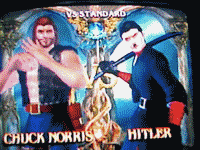

Mar Rojo
 De: La Frikipedia, la enciclopedia extremadamente seria.
De: La Frikipedia, la enciclopedia extremadamente seria.
Despues de una dificil limpieza a esa camiseta, logro obtener la del Manchester
«Es.. es.. NEGRO!!!!»
~ Daltonico viendo el mar rojo
«Quiero una camiseta del Manchester»
~ Cristiano Ronaldo lavando una camiseta del Real Madrid en estas aguas
Mar donde se disputaron todas pero absolutamente todas las batallas de Star Wars la epoca cuando tu tatara abuelita jugaba con las canicas piedras, en ese pequeño parque que cubría su pueblo natal.. si ese mismo lugar: donde sacrifico ese espacio para construir esa casa donde tu estas leyendo esto.
Historia
Todo empezo con el descubrimiento de America y esa batalla por el control de la Estrella de la Muerte misma. Toda pelea o batalla debía hacerse con una cita, pidiendo autorizacion del uso y cuidado de la misma, por varios puntos:
- Las batallas no se podian disputar en otro lugar, a menos que quieras recibir una patada giratoria de Chuck Norris.
- El unico campo de
furbol batalla donde habia: palcos, butacas, asientos. (y ventas de canguil ambulantes)
- Debias pedir una cita porque, ese campo tenía muchas batallas reservadas desde hace tiempo.
Con el descuido de la gente ese lugar con ese Mar tan limpio (conmemoraciones siglo XVI a.c - cuando murio tu tatara abuelito) ese mar.. tan blanco, era muy limpio, que hasta era blanco... llego a llenarse de sangre y ahi su nombre: Mar sangriento rojo.
Grandes Batallas
 La batalla mas emocionante en el Mar Rojo
- Toma de la Bastilla
- Independencia de America
- La guerra fria (se disputo en pleno verano)
- Manchester United vs. Chelsea
- Liga de Quito vs. Fluminense
- Chuck Norris vs. Hulk Hogan (recorde de batalla mas pequeña: 1 min.)
- Zinedine Zidane vs. Materazzi aquí
Características
A parte de ser rojo:
- 1-Produce tinta para bolígrafos rojos.
- 2-Produce agua roja que no sirve para nada. (Puedes beberla, pero solo recomendable para Emos que no quieren sufrir)
- 3-Se usa para transplantes de sangre.
- 4-No es azul. (A menos que seas daltónico)
- 5-Uso facil para convertir camisetas del Real Madrid a las del Manchester. (Pregunte a: Cristiano Ronaldo)
- 6-Ya no se lo usa como campo de
furbol batalla.
- 7-Lave sus camisetas en este manantial.
Amigos
- 1-Emos
- 2-Mas Emos
- 3-Y muchos mas.. (emos)
- 4-Doctores (para transplantes de sangre
- 5-Jugadores de furbol que se hacen del Manchester
Enemigos
- 1-Rio Amazonas. (le hace competencia)
- 2-Los que odian la sangre.
- 3-Chuck Norris (ya que se llevo una desilución con el campo de batalla).
Quien vive en el mar negro
- 1-Los cadaveres de las antiguas batallas
- 2-Emos (como que si fuera poco.. ¬¬)
- 3-De ahi salen los juveniles de Manchester
Autor(es):
- Aque
- Roms
- Guepard
- Raperitu
- Ecuadorian
Frikipedia 2005-2016, Licencia
GFDL 1.2 - Extraído por FrikiLeaks